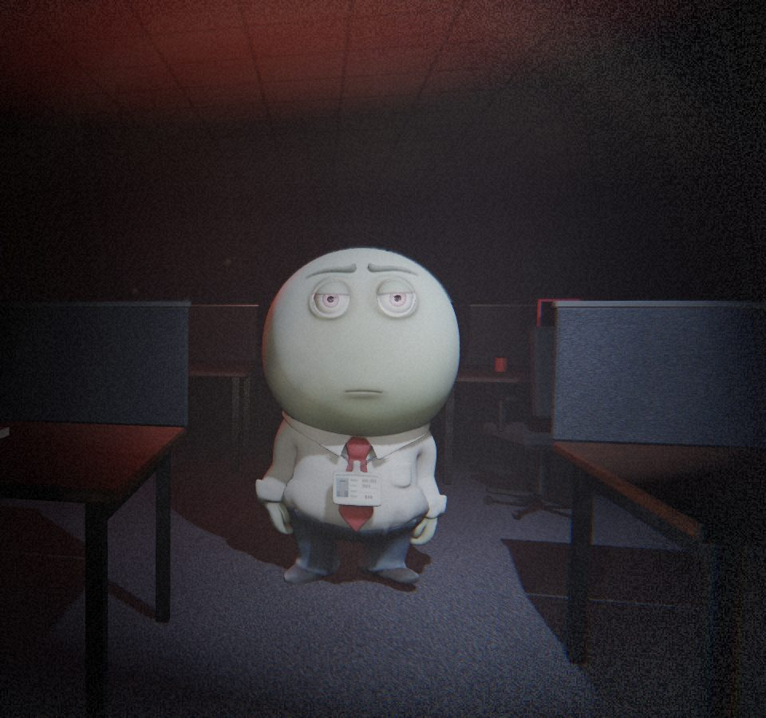
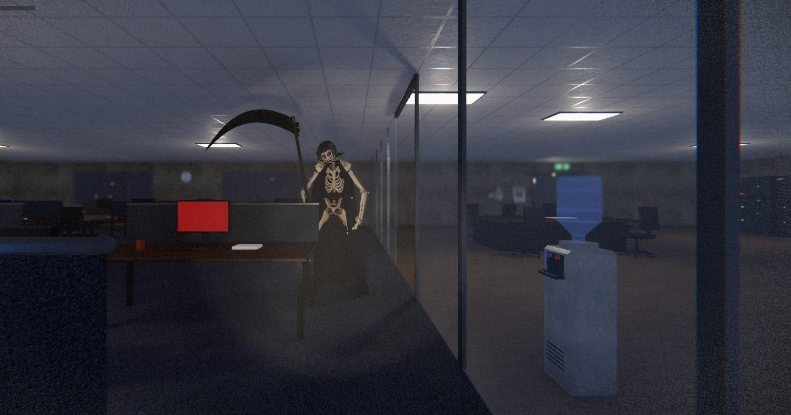
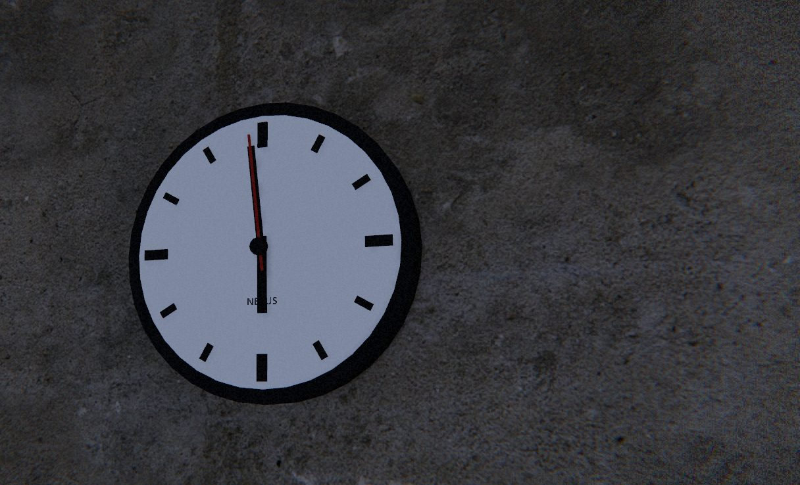

Até 10 amigos, pelo código da sala
Quem cria a sala recebe um código de 5 letras. Os amigos digitam e entram. Sem programa extra, sem abrir porta no roteador.
O expediente acabou. Você não. Terror cooperativo num escritório à noite, com até 10 amigos.
O link de download sai em breve.


Dezoito horas e a equipe ainda está nas mesas. Ninguém lembra mais do Blk, o funcionário mais antigo da casa, que morreu fumando escondido no banheiro. O ponto dele continua batendo. A energia cai, o prédio tranca, e quem ficou depois das 18h não sai mais.

Quem cria a sala recebe um código de 5 letras. Os amigos digitam e entram. Sem programa extra, sem abrir porta no roteador.
Mas a pilha da lanterna acaba. Quando as luzes apagam, ele caça.
Gasolina no gerador, fusíveis no quadro, a senha do cofre e duas alavancas ao mesmo tempo.
Clique em Baixar o jogo. É um .zip de uns 180 MB.
Botão direito no arquivo, Extrair tudo. Não precisa instalar nada.
O Windows vai avisar que protegeu o computador, porque o jogo não tem assinatura paga. Clique em Mais informações e depois em Executar assim mesmo.
Jogar com amigos, Criar sala, e passe o código. Quem entra vai em Jogar com amigos, digita o código e clica em Entrar.
Windows 10 ou 11, 64 bits, com placa de vídeo dedicada. O jogo é 3D e roda melhor com uma GTX 1650 ou parecida.
Use fone de ouvido. O microfone é opcional, mas se você gritar perto dele, ele ouve. Dá para testar nas Opções do jogo.